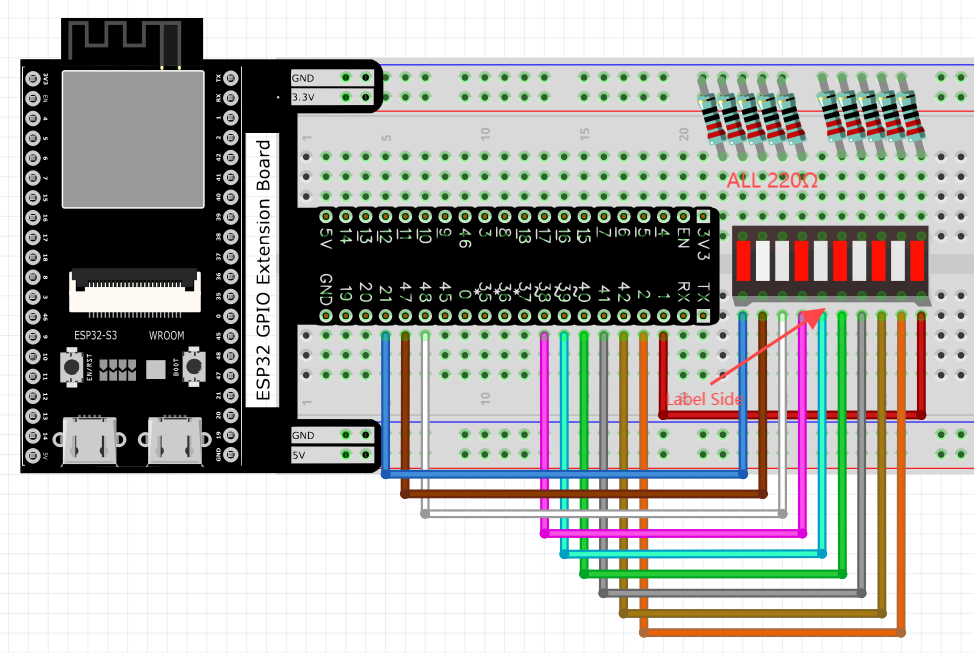
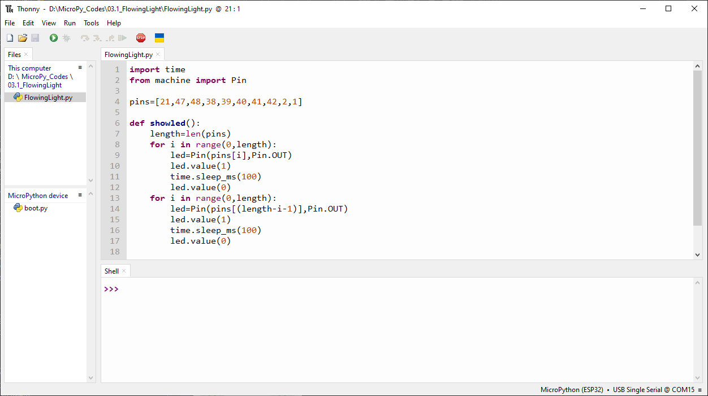
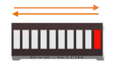

Chapter 3 LED Bar
We have learned how to control a LED blinking, next we will learn how to control a number of LEDs.
Project 3.1 Flowing Light
In this project, we use a number of LEDs to make a flowing light.
Component List
ESP32-S3-WROOM x1
GPIO Extension Board x1
830 Tie-Points Breadboard x1
Resistor 220Ω x10
Jumper Wire x10
LED Bar Graph x1
Connect
Code
This project is designed to make a flowing water lamp. Which are these actions: First turn LED #1 ON, then turn it OFF. Then turn LED #2 ON, and then turn it OFF… and repeat the same to all 10 LEDs until the last LED is turns OFF. This process is repeated to achieve the “movements” of flowing water.
03.1_FlowingLight
Move the program folder “Super_Starter_Kit_for_ESP32_S3/Python/Python_Co des” to disk(D) in advance with the path of “D:/Micropython_Codes”. Open “Thonny ”，click “This computer” >> “D:” >> “Micropython_Codes” >> “03.1_FlowingLight” and d ouble click “FlowingLight.py”.
Click “Run current script” shown in the box above, LED Bar Graph will light up from left to right and then back from right to left.
The following is the program code:
import time
from machine import Pin
pins=[21,47,48,38,39,40,41,42,2,1]
def showled():
length=len(pins)
for i in range(0,length):
led=Pin(pins[i],Pin.OUT)
led.value(1)
time.sleep_ms(100)
led.value(0)
for i in range(0,length):
led=Pin(pins[(length-i-1)],Pin.OUT)
led.value(1)
time.sleep_ms(100)
led.value(0)
while True:
showled()